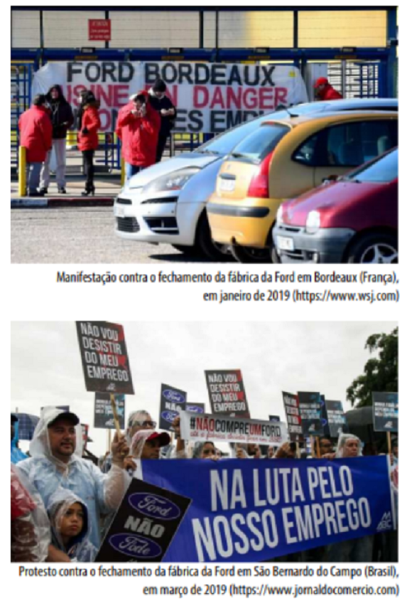
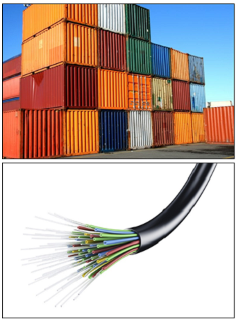

Conteúdo:
Questão 01
(IFRR 2015)
“Em linhas gerais, podemos caracterizar o relevo brasileiro como antigo e rebaixado. A senilidade do relevo brasileiro está relacionada, principalmente, à sua estrutura geológica, uma vez que sua morfologia externa é mais recente. Em outras palavras, a geologia é antiga, mas a geomorfologia, não, pois enquanto a estruturação é consequência de fatores endógenos ao relevo, a esculturação é produto das forças exógenas que estão constantemente esculpindo a morfologia brasileira. A modesta altitude de nosso relevo apresenta-se distribuída em variadas formas”.
ADÃO, Edilson; FURQUIM JR., Laercio. GEOGRAFIA em REDE. Vol. 1. 1. ed. São Paulo: FTD, 2013.
Quanto as formas o relevo brasileiro é classificado como:
a) Colinas, Montanhas, Depressões, Planaltos.
b) Montanhas, Chapadas, Planícies, Peneplanos.
c) Serras, Planaltos, Depressões, Colinas.
d) Serras, Chapadas, Planaltos, Colinas.
e) Planícies, Planaltos e Depressões.
Questão 02
(UERN 2014) Sempre que se fala sobre o relevo brasileiro, três classificações são lembradas: de Aroldo de Azevedo, de Aziz Ab’Saber e de Jurandyr Ross. Pode-se pensar que havia erro nas primeiras classificações, entretanto, nada disso aconteceu. A verdade é que cada autor seguiu uma “escola” diferente em seus estudos de geomorfologia. A classificação de Jurandyr Ross, estabelecida em 1981, classifica três formas de relevo no Brasil.
Assinale-as.
a) Planalto, Planície e Montanha.
b) Planalto, Planície e Depressão.
c) Chapada, Planalto e Depressão.
d) Montanha, Depressão e Planície.
Questão 03
(IFSULDEMINAS 2013) Considerando as fontes de energia e os recursos minerais mundiais no Brasil, relacione a segunda coluna de acordo com a primeira. Em seguida, assinale a alternativa CORRETA:
a) 1, 2, 3, 4.
b) 4, 3, 2, 1.
c) 4, 2, 3, 1.
d) 4, 2, 1, 3.
Questão 04
(UFRR 2019) O título de reportagem do jornal O Globo de 06.Set.2018 afirma: “Brasil tem potencial único de petróleo e gás natural” .
(https://oglobo.globo.com/economia/brasil-tem-potencial-unico-depetroleo-gas-natural-23045228. Acesso em: 10. Out. 2018).
No entanto, além desses recursos naturais, o Brasil também é um grande produtor de minérios, com destaque aos de tipo metálico. Sobre o tema dos recursos minerais, os principais destaques de produção mineral por estado da federação são:
I. Pará e Minas Gerais: ferro, manganês, cobre e alumínio.
II. Rio de Janeiro, Espírito Santo, Rio Grande do Norte e Bahia: petróleo.
III. Estados da região Sul do Brasil: carvão mineral.
IV. Amapá, Amazonas, Tocantins e Pará: ouro.
Considerando as assertivas I, II, III e IV, é CORRETO afirmar que:
a) IV é verdadeira e I, II e III são falsas.
b) I, II e III são verdadeiras e IV é falsa.
c) I e II são falsas e III e IV são verdadeiras.
d) I e II são verdadeiras e III e IV são falsas.
e) II e IV são verdadeiras e I e III são falsas.
Questão 05
(UECE 2015 Atente às afirmações abaixo, sobre o processo de industrialização no Brasil.
I. A abolição da escravidão teve como consequência a expansão do trabalho assalariado que juntamente com a imigração europeia foram fatores indispensáveis para a industrialização brasileira.
II. O surgimento da indústria no Brasil ocorreu concomitante à industrialização europeia, complementando assim a relação colônia-metrópole.
III. O caráter substitutivo das importações marcou um período da industrialização brasileira, momento em que ocorreu uma produção interna de bens que antes eram importados.
IV. A concentração industrial brasileira ocorreu em várias partes do país, sobretudo em São Paulo e na região da zona da mata mineira, com seus polos tecnológicos.
É correto o que se afirma apenas em
a) II e IV.
b) I e III.
c) I e IV.
d) II e III.
Questão 06
(UNESP 2013) O processo de desconcentração industrial no estado de São Paulo, iniciado na década de 1970, alterou profundamente seu mapa e território: a mancha metropolitana da capital se expandiu em direção ao Vale do Paraíba, Sorocaba e às regiões de Campinas e Ribeirão Preto, conglomerados urbanos especializados se formaram ao longo de uma densa malha rodoviária e as cidades médias assumiram a liderança do mercado em seu entorno.
(Claudia Izique. Pesquisa FAPESP, julho de 2012.).
A transformação da indústria na metrópole de São Paulo pode ser entendida pela modificação do sistema de produção, associada aos avanços em transporte e comunicação. As empresas que participaram desse processo procuravam
a) conseguir mão de obra suficiente para suas atividades, já que na metrópole os trabalhadores não aceitavam mais trabalhar nas fábricas.
b) adquirir matéria-prima para seus produtos, visto que os recursos naturais na metrópole haviam se esgotado.
c) obter novos mercados, já que a influência dos produtos importados no centro da metrópole é muito grande.
d) antecipar mercados, prevendo as futuras necessidades das cidades médias em expansão.
e) reduzir os custos da produção, sabendo que as novas cidades ofereciam incentivos fiscais, terrenos e mão de obra mais baratos.
Questão 07
(FGV-RJ 2019) A montadora norte-americana Ford anunciou o fechamento de sua fábrica em São Bernardo do Campo, no ABCD paulista, como parte de seu plano de reestruturação global, para enxugar suas operações e preparar-se para uma nova gestão de sua cadeia de produção. Segundo analistas do setor, os carros do futuro serão celulares sobre rodas e não poluentes, razão pela qual as fábricas mais antigas, que demandariam muito investimento para atualizarem sua capacidade produtiva, tendem a ser fechadas.

Com relação à reestruturação do setor automobilístico, em escala mundial e sobre seus efeitos no Brasil, analise as afirmações a seguir.
I A reestruturação estratégica da Ford exemplifica a busca por maior eficiência e lucratividade, com corte de custos operacionais, priorizando regiões que oferecem melhor escoamento da produção, mão de obra mais barata e boas redes de fornecedores.
II O fechamento de fábricas da Ford na França e no Brasil exemplifica a transformação global do modelo de produção de veículos, incentivada por mercados que exigem requisitos de sustentabilidade, como carros elétricos e híbridos.
III Os protestos contra o fechamento das fábricas da Ford mostram a dificuldade de sindicatos, gestores e Estado de controlar e regulamentar o impacto regional dos fluxos de capital e tecnologia da atual globalização.
Está correto o que se afirma em
a) I, II e III.
b) I e II, apenas.
c) I, apenas.
d) II e III, apenas.
e) II, apenas.
Questão 08
(UNIT-SE 2019) A industrialização do Brasil produziu e transformou o espaço, conferindo-lhe uma nova lógica e novos significados.
Considerando-se a informação e os conhecimentos sobre o processo de industrialização brasileira, marque V nas afirmativas verdadeiras e F, nas falsas.
( ) O processo de desconcentração espacial das indústrias, por não ter sido acompanhado por uma política de gerenciamento urbano, acarretou a difusão de problemas socioambientais nas médias cidades.
( ) As fábricas deslocam-se para locais nos quais contam como financiamento por dinheiro público, seja por meio de incentivos fiscais ou pela doação de infraestrutura.
( ) A atual desindustrialização do país vem provocando um rápido e contínuo processo de desmetropolização, com a consequente diminuição da população absoluta, das emigrações e do espaço físico das cidades.
( ) Enquanto política de Estado, o processo de industrialização iniciou-se na década de 1950 baseado em um tripé, ou seja, no capital nacional privado, estatal e estrangeiro.
( ) As empresas fogem dos centros mais tradicionais para novas regiões, onde os operários possuem maior organização sindical e garantias trabalhistas.
A alternativa que indica a sequência correta, de cima para baixo, é a
a) F F V F V.
b) F V V V F.
c) F V F V V.
d) V F V V F.
e) V V F F F.
Questão 09
(UEFS BA 2016) Matriz de transporte é a distribuição dos meios de circulação para transportar mercadorias e pessoas em determinado momento em uma área geográfica. Ela inclui mensurar os volumes e tipos de cargas e de passageiros, a intensidade e os meios utilizados e os destinos de partida e chegada. O transporte de carga é um dos problemas básicos da economia.
(POR TERRA, água e ar. Atualidades Vestibular + ENEM. São Paulo: Abril, ed. 12, 2011.).
A partir da leitura do texto e dos conhecimentos sobre a circulação no espaço, a delimitação da geografia dos transportes e seu papel social, é correto afirmar:
a) O Sudeste, por contar com as maiores redes ferroviárias e rodoviárias, e os mais movimentados portos e aeroportos do país, não enfrenta problemas de mobilidade nem de infraestrutura.
b) Operando em alguns trechos das fronteiras agrícolas do Mato Grosso, a Ferrovia Norte do Brasil (Ferronorte) e a hidrovia Paraná-Tietê participam no escoamento de cargas dessa região para os portos de Santos (SP) e Paranaguá (PR).
c) O gasoduto Brasil-Bolívia transporta gás natural da Bolívia até São Paulo, enquanto os alcooldutos construídos pela Petrobras interligam as regiões produtoras aos portos de São Sebastião e Tubarão, no litoral paulista.
d) O Brasil, apesar de possuir uma das mais extensas áreas navegáveis do mundo e das vantagens que as hidrovias oferecem em termos de custos, pouco explora a imensa rede de rios de planícies do Centro-Sul do país.
e) O sistema rodoviário brasileiro oferece muitas rotas alternativas, semelhantes ao europeu, para aqueles que não podem pagar o pedágio.
Questão 10
(FTD 2016) A globalização se trata da integração entre os países e pessoas do mundo. Com relação a esse processo, as duas imagens simbolizam

a) produtos largamente consumidos por consumidores finais.
b) tecnologias ultrapassadas e que estão caindo em desuso.
c) projetos antigos de redes, já superados nos países ricos.
d) elementos revolucionários que viabilizam e aceleram processos.
e) a importância dos recursos naturais primários no comércio internacional.
Comentário:
Sendo a modalidade de transporte de cargas de menor custo, o transporte marítimo foi profundamente otimizado com o uso de contêineres (resistentes e de fácil manuseio), os quais possibilitaram organizar a logística de armazenamento das mercadorias de modo padronizado, agilizando o trabalho nos portos e reduzindo custos. Já a fibra ótica potencializou o sistema de redes tecnológicas, uma vez que a velocidade de transmissão de dados, por meio desse tipo de conexão, acelerou-se exponencialmente em relação à tecnologia anterior.